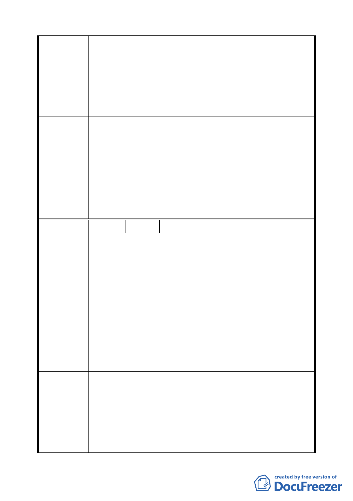

一、大安區市民大道（新生南路至復興南路段）南側部分土地，
地形狹長且南面為整條帶狀公園，並無出入通道，市民大
道側為低矮破舊平房，而其南側目前已整建為七樓住宅，
陳情理由
若要推動都更改善市容，必須讓舊有七樓能維持原有容
積，前後合併基地深度才足夠改建新大樓，否則利基不
足，更新計畫淪為紙上談兵。
二、本基地與市民大道（復興南路至光復南路）南側部分土地
同屬大安區，其使用分區不同實屬極度不合理。
新計畫基地由第 3-1 種住宅區（特）改為第 4-1 種住宅區（特），
建議辦法
使其容積率由 225％改為 300％，原有舊七樓住宅改建時仍能
維持原有容積，新大樓地下室車道出入口由市民大道出入，空
地增加並滿足防救災需求。
基於全市容積總量管制及維護地區環境品質，尚不宜逕自提高
基準容積率，仍宜透過都市更新獎勵容積。本案已研提時程獎
委員會決議
勵及劃定都市更新地區適用都市更新條例各項容積獎勵作為
開發誘因，另依都市更新條例第 44 條第 1 項第 1 款規定：「實
施容積管制前已興建完成之合法建築物，其原建築容積高於法
定容積者，得依原建築容積建築。」，本項仍依公展計畫辦理。
編
號2
陳情人 朱讚臣（松山區敦化段三小段 351 地號）
一、市民大道全線兩側變更計畫案唯獨「復興南路至光復南路
段」呈現南北不對稱，南側為第 4-1 種住宅區北側為第
3-1 種住宅區，顯然有違南北均衡發展。
二、促進市民大道（復興南路至光復南路段）兩側平衡發展。
陳 情 理 由 三、塑造市民大道（復興南路至光復南路段）兩側呈現對稱型
態之景觀軸線。
四、提昇軸心地區有限土地資源之利用效益。
五、放寬時程獎勵對象，以加速土地及建築物之開發。
一、變更市民大道北側（復興南路至光復南路段）第 3 種住宅
區為第 4-1 種住宅區（與南側同為第 4-1 種住宅區），使
建議辦法
南北兩側具有相同的發展條件與空間。
二、適用時程獎勵之建築基地面積調整為達 500 平方公尺以
上，以利加速整合改建。
1、市民大道早期因鐵路分隔兩側發展，市民大道（復興南路
至光復南路段）南側鄰近臺北市忠孝東路路線型中心商業
區，具有較高使用強度之發展需求，故於民國 73 年已調整
委員會決議
為第 4 種住宅區。基於全市容積總量管制，使用分區變更
仍不宜逕予提高基準容積率。
2、本案係以獎勵大街廓開發方式以提升整體環境品質，故時
程獎勵基地面積仍宜維持 1000 平方公尺以上或為完整計
畫街廓，本項仍依公展計畫辦理。
5